Accessibilité web
weekly tech
par Jérôme SARTOLOU
AccesSlide
Enfin un diaporama accessible (par Access42)
Tous les slides de cette présentation ont été réalisés avec cet outil
Un peu de contexte
L'accessibilité, c'est quoi ?
Tim BERNERS-LEE - inventeur du World Wide Web (WWW) et fondateur du World Wide Web Consortium (W3C)L'accessibilité consiste à mettre le Web et ses services, à la disposition de tous les individus, quel que soit :
- leur matériel ou logiciel,
- leur infrastructure réseau,
- leur langue maternelle,
- leur culture,
- leur localisation géographique,
- ou leurs aptitudes physiques ou mentales
L'accessibilité, pour qui ?
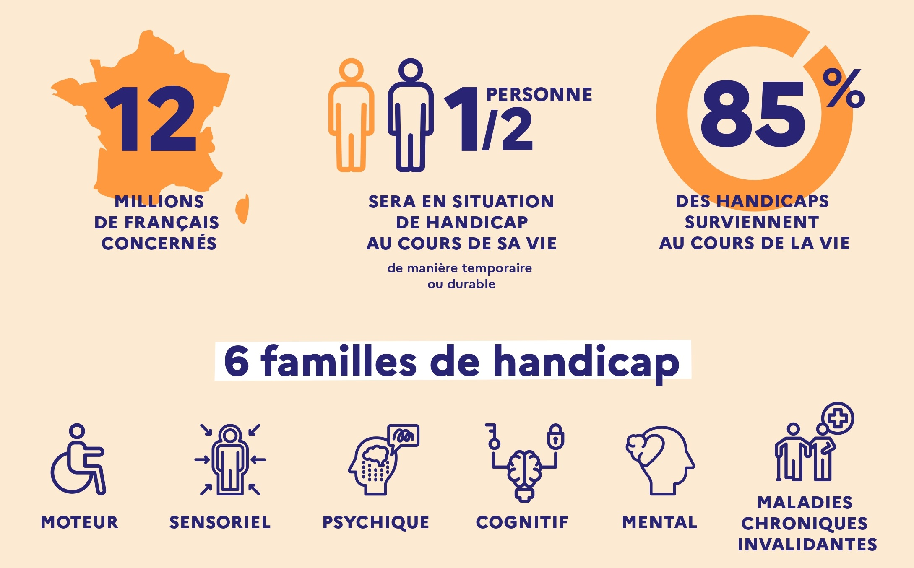
80% des handicaps sont invisibles
L'accessibilité, pour qui ?
Différents types d'interactions
- Naviguer seulement au clavier
- Naviguer seulement à la souris
- Lire les descriptions des éléments visuels
- Lire les descriptions des éléments audios
- Naviguer à son rythme
- Personnaliser l’affichage (couleurs, taille des caractères, police, animations...)
- Besoins liés au vieillissement des utilisateurs
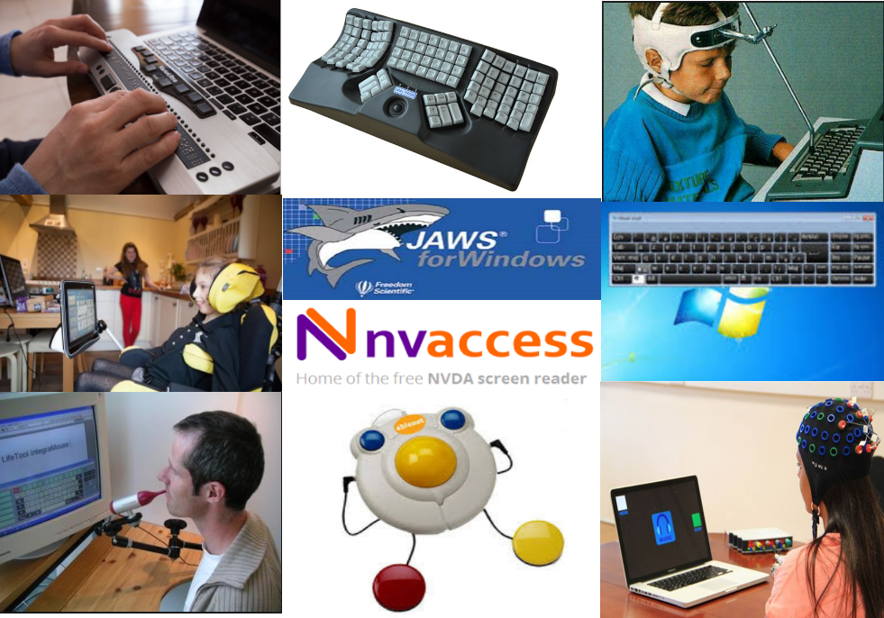
Mais aussi : loupe d'écran, dictée vocale, etc
Et la loi dans tout ça ?
L’article 47 de la loi de 2005
Sont accessibles aux personnes handicapées [...] les services de communication au public en ligne des organismes suivants :
- Les personnes morales :
- de droit public (administrations…)
- de droit privé délégataire d’une mission de service public (gestion de l’eau, des transports…)
- de droit privé constituées spécifiquement pour satisfaire les besoins d’intérêt général autre que financier ou commercial (office de tourisme, culturel, social…).
- Les entreprises dont le chiffre d’affaires excède un certain seuil (250 millions d’euros).
Et la loi dans tout ça ?
Les obligations
- Être conforme au RGAA.
- Publier une déclaration d’accessibilité avec l’état et le niveau de conformité.
- Mettre en place un moyen de contact dédié et porter assistance aux utilisateurs dans un délai raisonnable.
- Afficher le statut de conformité global sur chaque page (non conforme, partiellement conforme, totalement conforme).
- Publier un schéma pluriannuel de mise en accessibilité, décliné en plans d’action annuels.
Sanction maximale de 25.000€ par site et par an pour défaut de publication
Note : les délais de mise en conformité des sites existants ne peuvent excéder trois ans.
Et la loi dans tout ça ?
Pour en savoir plus
-
Résumé
de la Directive européenne (UE)
2019/882 - Article Access42 datant de 2023 qui explique que pour le secteur privé, pour les sites internet, extranet et intranet :
- Tous les sites publiés après le 28 juin 2025 doivent être en conformité dès leur publication.
- Les sites plus anciens doivent être en conformité à partir du 28 juin 2030.
- Validité de la déclaration d'accessibilité
- Champ d'application du RGAA
- Article 47 en intégralité
- Décret n° 2019-768 du 24 juillet 2019 relatif à l’accessibilité aux personnes handicapées des services de communication au public en ligne
- Accessibilité numérique et RGAA - Article Access42
Normes et référentiels
- UAAG pour les agents utilisateurs (navigateurs internet et technologies d'assistance)
- ATAG pour les outils d’édition de contenus (CMS et fournisseurs de contenus)
- WCAG pour les contenus web (version actuelle 2.1)
- L’API ARIA pour les composants riches.
- RGAA référentiel français de mise en application du WCAG (version actuelle 4.1.2)
A
Fondamental
AA
Avancé
AAA
Exemplaire
Pour être compatible RGAA, il faut respecter 100% des règles de niveaux A et AA
Normes et référentiels
RGAA
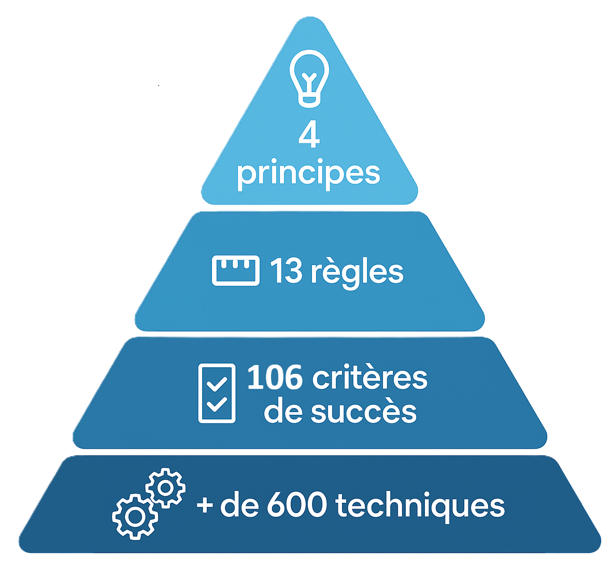
Perceptible
- Contraste des couleurs
- Taille de polices
- Alternatives textuelles aux images
Utilisable
- Navigation au clavier
- Recherche
- Attention aux crises d'épilepsie !!!
Compréhensible
- Enchaînement et comportement logique
- Gestion du clavier (patterns ARIA)
- Aide à la correction d'erreur
Robuste
- Compatible avec les technologies d'assistance
- Responsive design
Normes et référentiels
RGAA
- Images
- Cadres
- Couleurs
- Multimédia
- Tableaux
- Liens
- Formulaires
- Navigation
- Consultation
- Scripts
- Eléments obligatoires
- Structuration de l'information
- Présentation de l'information
Normes et référentiels
RGAA
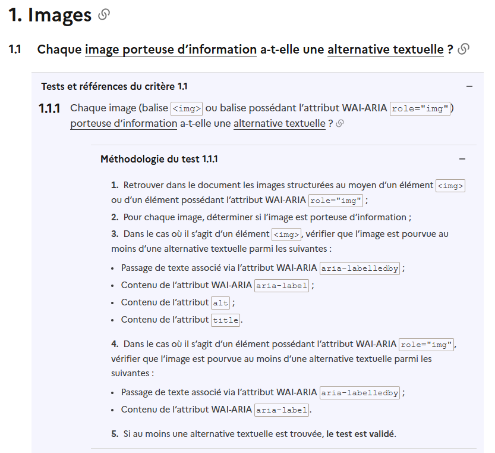
Normes et référentiels
RGAA - Environnement de test
Combinaisons :
-
OS
-
Navigateur
-
Lecteur d'écran
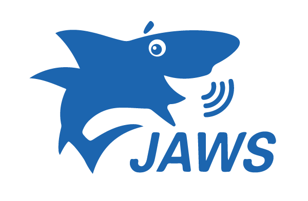

| Technologie d’assistance | Navigateur |
|---|---|
| NVDA (dernière version) | Firefox |
| JAWS (version précédente) | Firefox ou Internet Explorer |
| VoiceOver (dernière version) | Safari |
| Technologie d’assistance | Navigateur |
|---|---|
| JAWS (version précédente) | Firefox |
| NVDA (dernière version) | Firefox ou Internet Explorer |
| VoiceOver (dernière version) | Safari |
Passons à la technique...
Les bases
Langue du document [A]
- Sur la balise
<html> - En HTML5, attribut
lang - Code respectant la norme ISO 639
- Avec transloco => changer la valeur dynamiquement
Changement de langue dans le document [AA]
- Attribut
langsur l'élément (souvent un<span>) ou un parent - La référence : 9ème édition du dictionnaire de l'académie française
<html lang="fr-FR"><span lang="en">newsletter</span><span lang="en">on</span> ou <span lang="en">off</span>Titre des pages [A]
- Balise
<title> - En angular, utiliser:
- Le service
Title - Ou l'attribut
titledans vos routes
- Le service
Caractéristiques du titre :
- Pertinent
- De préférence unique (permet de retrouver la page dans l'historique de navigation)
- Donne le contexte de la page
- Formulaire en succès / erreur
- Pagination
- etc
<title>OAD - Tasking OneDay - Acquisition step</title><title>OAD - Tasking OneDay - Delivery step in error</title><title>OAD - Tasking OneDay - Confirmation success</title><title>OAD - Living Library - Order in error</title><title>OAD - Archive imagery search for "STEREO" (25 / 1234)</title>Structure du document [A]
-
<header>Entête -
<nav>Navigations principales et secondaires -
<main>Contenu principalUne seule balise main par page !!!Pas de contenu répété (barres latérales, liens de navigation, copyright, logo du site, champs de recherche, etc)
-
<footer>Pied de page
<body>
<header>
<nav>
<main>
<article>
<header>
...
<footer>
<article>
<header>
...
<footer>
<footer>
Structure du document [A]
Eléments optionnels:
-
<search>Champ de recherche -
<aside>Contenu additionnel indirectement lié au contenu du site (exemple : bannière de pub, glossaire, liens)
<body>
<header>
<nav>
<search>
<main>
<article>
<header>
...
<footer>
<article>
<header>
...
<footer>
<aside>
<footer>
Structure du document [A]
Rajouter aussi le role ARIA associé au landmark
| Landmark | Role | Exemple |
|---|---|---|
| <header> | banner |
|
| <nav> | navigation |
|
| <main> | main |
|
| <footer> | contentinfo |
|
| <aside> | complementary |
|
| <search> | search |
|
La navigation
Lien d'accès rapide [A]
- Accès direct au
<main>(bypass le header, la nav & co) - Doit être visible à la prise de focus
- Doit être le premier élément focusable*
- Rajouter un
tabindex="-1"sur le<main>(pour pallier un problème sur Safari) - A mettre dans un
<nav>si on en met plusieurs
<a href="#main">Contenu principal</a><main id="main" tabindex="-1">...</main>
Exemple sur developer.mozilla.org
* sauf quelques exceptions que l'on verra plus tard
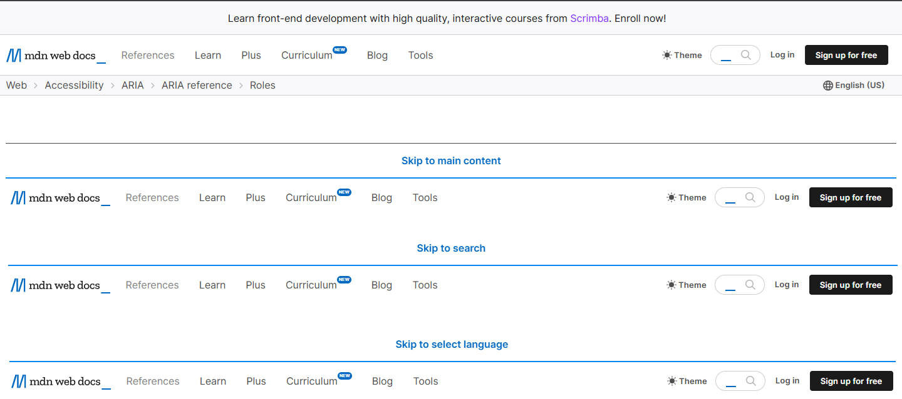
Lien d'accès rapide [A]
En angular, si on a du Routing, c'est un peu différent :
-
Activer l'option
anchorScrollingdu RouterprovideRouter(routes, withInMemoryScrolling({ anchorScrolling: 'enabled' })) -
Le lien dans le template
<a class="skip-link" [routerLink]="[]" fragment="main">Skip to main content</a><main id="main" role="main" tabindex="-1">
Lien d'accès rapide [A]
- CSS pour masquer le skip-link
-
angular Material: mixin
a11y-visually-hiddenet classecdk-visually-hidden( cf doc Material )
@use '@angular/cdk';
@include cdk.a11y-visually-hidden();
@mixin sr-only() {
@extend .cdk-visually-hidden;
}
.sr-only {
@include sr-only();
}
.skip-link:not(:focus):not(:focus-within) {
@include sr-only();
}.cdk-visually-hidden {
border: 0;
clip: rect(0 0 0 0);
height: 1px;
margin: -1px;
overflow: hidden;
padding: 0;
position: absolute;
width: 1px;
white-space: nowrap;
outline: 0;
-webkit-appearance: none;
-moz-appearance: none;
left: 0;
[dir='rtl'] & {
left: auto;
right: 0;
}
}Systèmes de navigation [AA]
Chaque ensemble de pages doit fournir au moins 2 systèmes de navigation
- Menu de navigation
- Moteur de recherche
- Plan du site
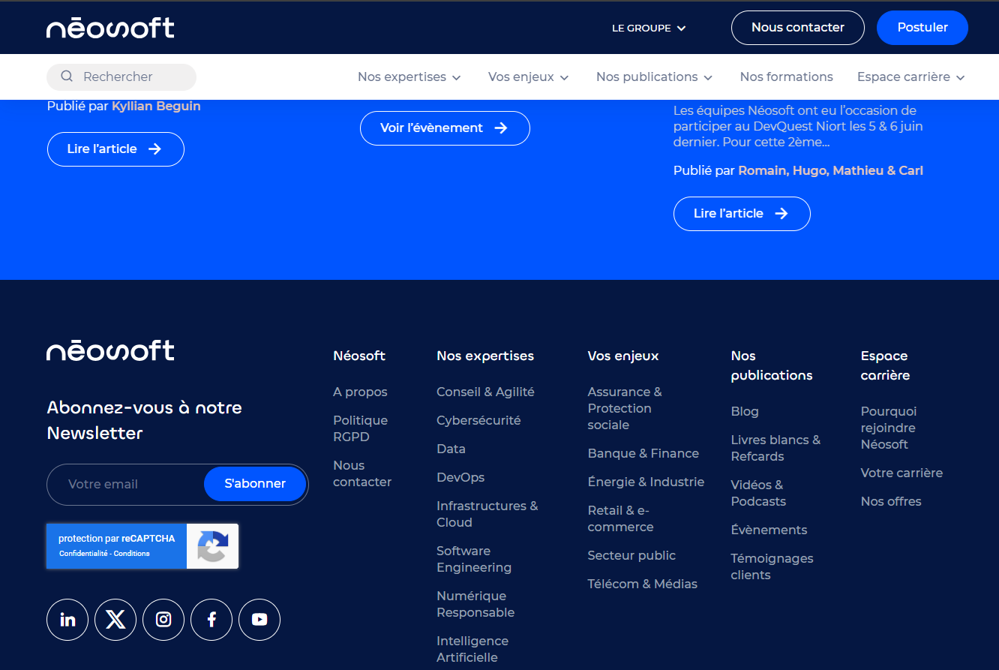
Systèmes de navigation [AA]
Règles additionnelles :
- Même position dans chaque ensemble de pages
- Présentation cohérente dans chaque ensemble de pages
- Même méthode de recherche dans chaque ensemble de pages
- Le moteur de recherche doit indéxer tous les contenus
- Le plan du site doit permettre d'accéder (au moins indirectement) à toutes les pages
- Le plan du site doit contenir des liens fonctionnels
Ordre de tabulation [A]
Navigation au clavier :
- Possible sur l'ensemble du contenu
- L'ordre de tabulation doit être cohérent
- Respect du "scope" (le focus ne doit pas sortir d'une dialog par exemple)
- Pas de piège au clavier
DevTools Firefox : Afficher l'ordre de tabulation
Contenus
Headings [A]
Qu'est-ce qu'un heading ?
- Balises
h1àh6 - N'importe quelle balise avec les attributs
role="heading"etaria-level="n"
<h1>Resources for Developers, by Developers</h1>
<h2>Featured articles</h2>
<h3>CSS anchor positioning</h3>
<div role="heading" aria-level="1">Resources for Developers, by Developers</div>
<div role="heading" aria-level="2">Featured articles</div>
<div role="heading" aria-level="3">CSS anchor positioning</div>
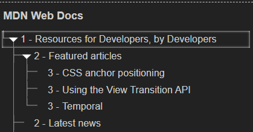
Headings [A]
Règles :
- Tous les titres sont matérialisés par des headings (pas de "faux titres" utilisant uniquement du CSS)
- Hiérarchie pertinente
- Contenu pertinent
Remarque : même s'il n'est pas interdit de sauter des niveaux, il vaut mieux éviter...
Listes [A]
Qu'est-ce qu'une liste ?
- Balises
ul+li(liste non-ordonnée) - Balises
ol+li(liste ordonnée) - Balises
dl+dt+dd(termes + définitions)
Equivalents ARIA :
-
ul/ol: N'importe quelles balises avec les attributsrole="list"+role="listitem" -
dl/dt/dd: N'importe quelles balises avec les attributsrole="list"+role="term"+role="definition"
Règles :
- Ne pas faire de "fausses listes" (avec des tirets +
br, etc) - Les ensembles de liens de navigation (présents dans les
nav) doivent être des listes
Listes [A]
<ul>
<li>Nos expertises</li>
<li>Vos enjeux</li>
</ul>
<ol>
<li>Nos expertises</li>
<li>Vos enjeux</li>
</ol><div role="list">
<span role="listitem">Nos expertises</span>
<span role="listitem">Vos enjeux</span>
</div><dl>
<dt>Néosoft</dt>
<dd>Meilleure ESN du monde :)</dd>
</dl><div role="list">
<span role="term">Néosoft</span>
<span role="definition">Meilleure ESN du monde :)</span>
</div>Semantic HTML [A]
Respecter la norme HTML
- Ne pas utiliser de
<br/>pour créer des paragraphes - Ne pas utiliser de
<div>pour faire des boutons - Ne pas utiliser de
<hx>pour gérer la font-size -
Ne pas utiliser de
<button>pour les liens(lien = redirection =<a>) -
Ne pas utiliser de
<a>pour les boutons(bouton = action sur la page courante =<button>) - etc
Images
Images [A]
2 types d'images :
- Porteuses d'information
- Décoratives
2 types principaux de déclaration d'images :
imgsvg
Images porteuses d'information [A]
Définition : Image qui véhicule une information nécessaire à la compréhension du contenu auquel elle est associée.
Définition RGAA complèteDoit avoir une alternative textuelle (aussi appelée "nom accessible")
Pour les balises img :
aria-labelledbyaria-labelalt(à privilégier car supportée par le plus de TA)title
Pour les svg :
- DOIT avoir l'attribut
role="img" aria-labelledbyaria-label
Images porteuses d'information [A]
Non-conforme Source
<img width="654" height="368" src="https://.../3586585.jpg">
Conforme Source
<img
alt="La scène de la Cène revisitée avec une femme robot au centre, une image emblématique de «Battlestar Galactica». — © SyFy"
title="La scène de la Cène revisitée avec une femme robot au centre, une image emblématique de «Battlestar Galactica». — © SyFy"
src="https://.../c6cd71d0-66c1-4bfc-b47f-46ea880cca61/small">
Images porteuses d'information [A]
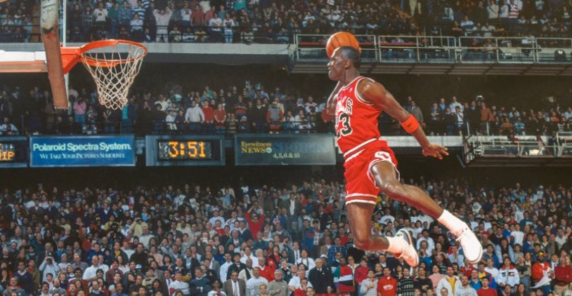
Non-conforme Source
<img
alt="Aucune description de photo disponible."
src="https://...7927516228250238976_n.jpg">
Conforme Source
<img
alt="To this day, people still talk about the 1988 NBA Dunk Contest, a memorable duel between Jordan and Dominique Wilkins. The two went tit-for-tat in the finals, with both scoring a pair of perfect 50s. In the end, it was Jordan — with the support of the hometown Chicago crowd — clinching back-to-back dunk titles."
src="https://.../200418150857-17-jordan-gallery-restricted.jpg">
Images porteuses d'information [A]
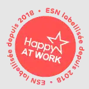
Non-conforme Source
<img
alt="Pastille_Happy_Work_2023"
src="https://.../Pastille_Happy_Work_2023.gif">
Perte d'information entre l'image et l'attribut alt
<img
alt="Pastille Happy at Work - ESN labellisée depuis 2018"
aria-label="Logo"
src="https://.../Pastille_Happy_Work_2023.gif">
alt OK, mais masqué par aria-label non pertinent
Images porteuses d'information [A]
Conforme
<img
alt="Pastille Happy at Work - ESN labellisée depuis 2018"
src="https://.../Pastille_Happy_Work_2023.gif">
<img
alt="Logo"
aria-label="Pastille Happy at Work - ESN labellisée depuis 2018"
src="https://.../Pastille_Happy_Work_2023.gif">
alt peu pertinent, mais masqué par aria-label pertinent
Images porteuses d'information [A]
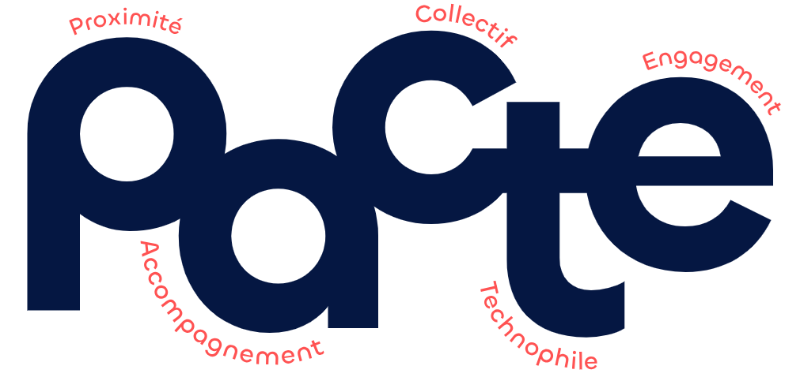
Non-conforme Source
<svg
width="1300" height="600" viewBox="0 0 1300 600" fill="none"
xmlns="http://www.w3.org/2000/svg">
...
</svg>
Conforme
<svg
width="1300" height="600" viewBox="0 0 1300 600" fill="none"
xmlns="http://www.w3.org/2000/svg"
aria-label="Le pacte Néosoft représente les 5 valuers mises en avant : P pour proximité, A pour accompagnement, C pour collectif, T pour technophile, E pour engagement">
...
</svg>
Images décoratives [A]
Définition : Image n’ayant aucune fonction et ne véhiculant aucune information particulière par rapport au contenu auquel elle est associée.
Définition RGAA complèteNe doit pas avoir d'alternative textuelle (aussi appelée "nom accessible")
Pour les img :
altvide- OU
aria-hidden="true" - OU
role="presentation" -
ET aucun autre attribut permettant de fournir une alternative textuelle
(
aria-label,aria-labelledby,title)
Pour les svg :
- PAS d'attribut
role="img" aria-hidden="true"- ET pas de balises
titlenidesc -
ET aucun autre attribut permettant de fournir une alternative textuelle
(
aria-label,aria-labelledby,title)
QUIZ Images [A]
QUIZ : conforme ou pas ? Source
<svg
aria-label="Se connecter avec Facebook"
role="img"
fill="currentColor" height="20" viewBox="0 0 16 16" width="20">
<title>Se connecter avec Facebook</title>
...
</svg>
L'image n'apporte rien de plus que le label du bouton
L'image est donc considérée comme décorative
aria-labeldoit être vide- Pas d'attribut
role="img" - Pas de balise
title
Mais ça serait correct si le bouton n'avait pas de label...
QUIZ Images [A]
QUIZ : conforme ou pas ? Source
<img
alt="connais tu ton voisin, neosoft"
src="https://.../Neosoft_Connais-tu-ton-voisin_Alexandre_Timothe-750x422.jpg">
Le contexte de la card est suffisant
L'image est donc considérée comme décorative
alt doit être vide
De plus, ce genre d'image est lié au concept d'images texte que nous n'aborderons pas (cf critère 1.8)
Légende d'image [A]
Exemple :
<figure role="group" aria-label="Et à la fin, c'est toujours Toulouse qui gagne... (©Icon Sport)">
<img
src="https://.../joie-toulouse-brennus-rugby-top-14-960x640.jpg"
alt="Et à la fin, c'est toujours Toulouse qui gagne...">
<figcaption>
Et à la fin, c'est toujours Toulouse qui gagne...
<span class="copyright">(©Icon Sport)</span>
</figcaption>
</figure>Images [A]
D'autres use-cases non-abordés :
-
Autres types d'images (
area,input type="image", images réactives,object type="image/...",embed type="image/...",canvas) - Images texte
- CAPTCHA
- Description détaillée
Couleurs
Contraste [AA]
Pour les textes :
4.5
chevron_leftSeuil
Normal 24px
Gras 18.5px
3
Contraste [AA]
Pour les composants graphiques ou interactifs :
3
Quel que soit son état :
- Normal
- Hover
- Focus
- Pressed
- Sauf l'état disabled
Ne concerne pas (entre-autre) :
- Les éléments disabled
- Les styles natifs du browser
- Les logos / noms de marque
Concerne :
- Tous les éléments du composant
- Les couleurs contigües
- Les couleurs d'arrière-plan contigües
- Tous les styles surchargés (par exemple, outline à la prise de focus)
Contraste [AA]
Quelques outils utiles :
- DevTools Chrome / Firefox
- Emulate reduced contrast
- Color picker
- Recherche de problème de contraste (Firefox)
- WCAG Contrast Checker ( Chrome / Firefox )
- Colour Contrast Analyzer
Information par la couleur [A]
L'information ne doit pas être portée UNIQUEMENT par la couleur
Exemples :
- Indication de page active
- Indication d'onglet actif
- Indication de toggle-button coché
- Status (approuvé / refusé)
Alternatives accessibles :
aria-currentouariaCurrentWhenActive+routerLinkaria-selectedaria-checked- Icônes
- Label sr-only
Attention !
- Valable aussi à l'intérieur des images
- Pas d'info gérées UNIQUEMENT via des
::before/::after(par exemple pour l'étoile des champs requis)
Visibilité de la prise de focus [A]
Ne pas supprimer ni dégrader l'indicateur de prise de focus
- Soit on utilise le style natif du navigateur
- Soit le style redéfini doit être accessible
- Pas d'
outline: 0 - Contraste 3:1
- Pas d'
Couleur par défaut [AA]
- Si
colordéfinie alorsbackground-colora minima héritée d'un parent - Si
background-colordéfinie alorscolora minima héritée d'un parent - Si image de fond (
backgroundoubackground-image) définie alorsbackground-colora minima héritée d'un parent